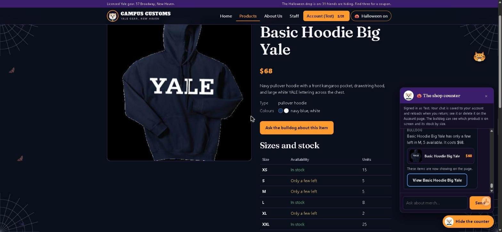
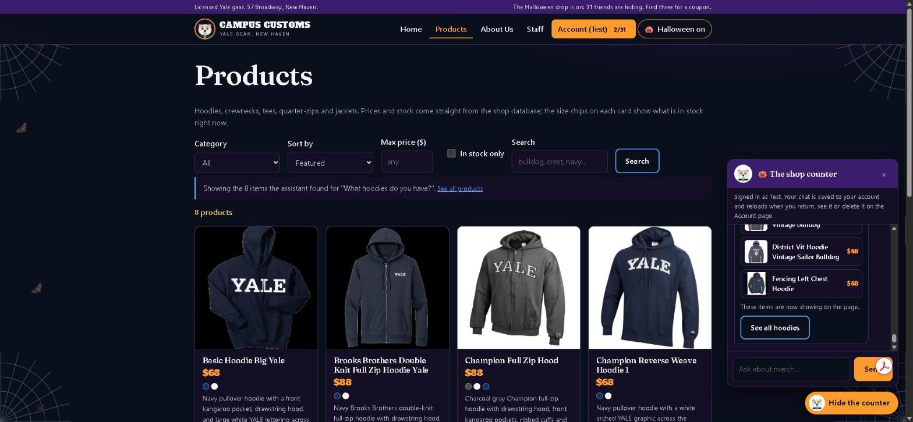
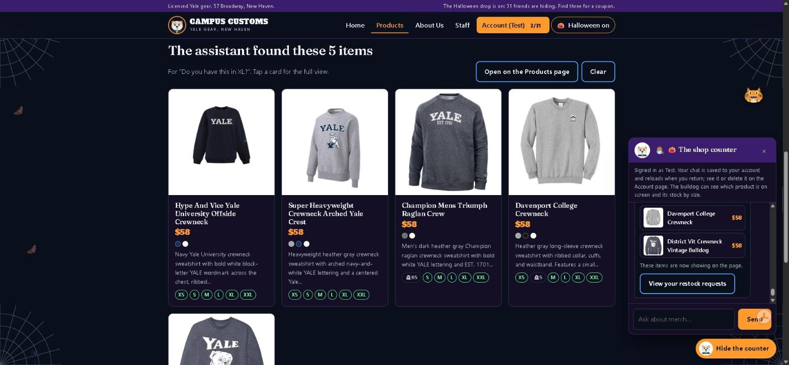
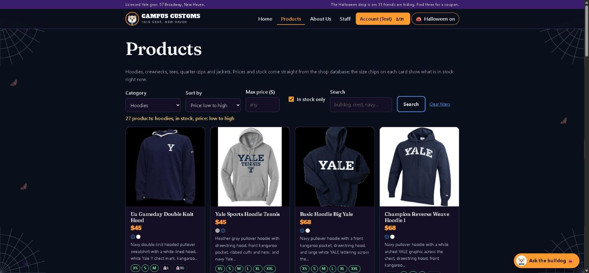

Campus Customs app check
| Check | What it proves | Result |
|---|---|---|
| 1. Chat checks inventory and price | The assistant reports the exact stock and price held in the database for the item on screen, nothing invented. | Pass |
| 2. Cards appear after a category question | A "what hoodies do you have?" question returns structured matches that render as cards in the chat and on the Products page. | Pass |
| 3. Usability feature from Problem 9: sold-out alternatives and a restock request | A sold-out size is no longer a dead end: the assistant shows items that have that size in stock and files a restock request the shopper can see on their Account page. | Pass |
| Bonus. Products filters and size chips (Problem 9) | Sort, price cap and in-stock-only live in the URL; every card shows which sizes are in stock. | Pass |
1. Chat checking the inventory level of an item
On the item page for the Basic Hoodie Big Yale, the shopper asked how many are left in M and what it costs.

Database cross-check: SELECT quantity FROM inventory WHERE product_id='basic-hoodie-big-yale' AND size='M' returns 5;
SELECT price FROM catalogue WHERE product_id='basic-hoodie-big-yale' returns 68.0. The reply, the page and the
database agree. The audit trail for this turn records one check_stock call against the database and a 5.4 s answer,
so the number came from a tool, not from the model's memory.
2. Dynamic search-result cards after a category question
On the Products page, the shopper asked "What hoodies do you have?".

search_products tool, the same eight appear as cards inside the
chat, and the Products grid narrows to those eight ("Showing the 8 items the assistant found"). A "See all hoodies" page link
takes the shopper to the full category.
The page renders cards only from the product ids the agent returned in its structured reply, and the harness drops any id that did not come from a tool result, so what the shopper reads matches what the page shows. The catalogue holds 27 hoodies; the tool caps a single answer at eight and the link opens the rest.
3. Usability feature from Problem 9: sold-out alternatives and a restock request
On the item page for the Baseball Left Chest Crewneck, where XL is at zero in the database, the shopper asked "Do you have this in XL?".

find_alternatives tool, shown as cards on the page, plus a "View your restock requests" link because the shopper
had asked earlier in the conversation for XL to be reordered (the server keeps one open request per size, so it was not duplicated).
Database cross-check: inventory has quantity 0 for this product in XL, and each listed alternative has XL above zero. The
audit trail for the turn records three tool calls, check_stock, find_alternatives and
request_restock (which found the request already open and did not duplicate it), in 10.4 s. The restock row for this
shopper, product and size exists with status open in restock_requests and is visible under "My restock requests" on
the Account page; staff accounts see it in the queue on the Staff page.
Bonus. Products you can narrow, with sizes on every card (Problem 9)

/products?category=hoodie&sort=price_asc&in_stock=true drives the filters: the status line reads
"27 products: hoodies, in stock, price: low to high", the first cards are the $45 hoodies, and the size chips show the sizes in
stock with sold-out sizes struck through (and a ghost in Halloween mode).
How the checks were run
Each question was typed into the live chat on the page shown and answered by the real model through Portkey (4 to 11 seconds per
turn). The numbers in the captions were then read from data/campus_customs.db with SQL, and the audit trail in
backend/output/audit.jsonl was read to confirm which tools ran. The automated suite (66 tests, run on a throwaway copy of
the database) covers the same contracts: cards only from tool results, stock and prices from the database, the restock rules, and the
filters.